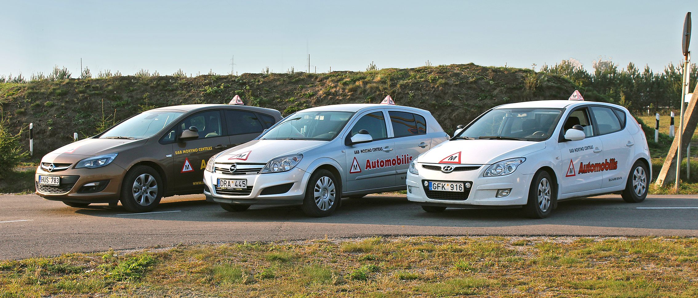

VIDEO
Auto skelbimai, naudoti automobiliai | Automobilis.lt 2020.10.29 07:27
 automobilis .lt Nemokami transporto skelbimai Įvesti naują skelbimą
Prisijungti Vartotojų sritis Įvesti naują skelbimą Prisijungti
Lengvieji automobiliai 10818 Padangos/Ratlankiai 923 Padangos
427 Ratlankiai
496 Auto paslaugos 889 Darbo pasiūlymai 5585 Elektriniai paspirtukai 12 Auto skelbimai autogidas.lt Automobiliai Automobilis Automobilių skelbimai autoplius.lt Autoskelbimai Mašinų skelbimai Motociklai Naudoti automobiliai Parduodu auto Perku auto Nemokamas auto skelbimų portalas - Automobilis.lt . Skelbkite auto skelbimus
nemokamai . Parduokite automobilius, padangas, ratlankius, siūlykite auto paslaugas. Čia galite greitai parduoti norimus auto daiktus, o jeigu norite automobilį parduoti greičiau - skelbimą galite išsikelti. Pasirinkite žemiau esančiame filtre norimą kategoriją ir jos kriterijus bei suraskite auto skelbimus.
Auto skelbimai Naujausi auto skelbimai 53 EUR Vilnius Prieš 12 val.
Kita Renault Opel Nissan R-16, Plieniniai štampuoti Ratlankiai
| 53 EUR
| Plieniniai štampuoti
| R-16
| 6
| 5
| 130.00
| 130.0
| 4 Parduodu naujus,originalius,sustiprintu s,skirtus mikroautobusams, skardinius plieninius Renaul Master,Opel Movano,Nissan NV400 bei kitiems automobiliams. R16 ratlankius.Kronprinz firmos 5 tvirtinimo tasku,tarp kuriu atstumas yra 130 ,cnetrines skyles 36 EUR Vilnius Prieš 12 val.
Kita Opel Chevrolet 5x105 R-16, Plieniniai štampuoti Ratlankiai
| 36 EUR
| Plieniniai štampuoti
| R-16
| 5
| 56.5
| 4 Parduodu originalius,vokiskus,naujus,sk ardinius,plieninius Opel Moka,Astra J, Chevrole Volt,Trax i ir kiti auto R16 juodos spalvos ratlankius 5 tvirtinimo tasku,tarp kuriu atstumas yra 105 ,cnetrines skyles diametras 56.6 isnesimas,yra 39 ir 41 .Po 3 35 EUR Vilnius Prieš 12 val.
Kita Volvo Peugeot Ford R-16, Plieniniai štampuoti Ratlankiai
| 35 EUR
| Plieniniai štampuoti
| R-16
| 6.5
| 5
| 108.00
| 65.0
| 4 Parduodu visiskai naujus,nenaudotus,supakuotus,R 16 plieninius,skardinius,metalini us ratlankius Volvo,peugeot,Ford ir kitiems japoniskiems automobiliams.,5 skyliu,atstumas tarp ju 108, centrine skyle 65.1 mm, po 35 eurus.Taip pat yra ir kitoms masinom 35 EUR Vilnius Prieš 12 val.
Kita Nissan Renault R-16, Plieniniai štampuoti Ratlankiai
| 35 EUR
| Plieniniai štampuoti
| R-16
| 6.5
| 5
| 114.30
| 66.0
| 4 Parduodu naujus,skardinius,plieninius Nissan Qashqai, Juke, Primera, X-Trail,Renault bei kitiems japonams R16 ratlankius dezese.5 tvirtinimo tasku,tarp kuriu atstumas yra 114.3 ,cnetrines skyles diametras 66.1.Po 35 eurus.Parduodu ir po viena.Visiska 35 EUR Vilnius Prieš 12 val.
Kita Opel Chevrolet Saab R-16, Plieniniai štampuoti Ratlankiai
| 35 EUR
| Plieniniai štampuoti
| R-16
| 6.5
| 5
| 56.5
| 4 Parduodu visiskai naujus,nenaudotus,supakuotus,R 16 plieninius,skardinius,metalini us ratlankius opel Astra J,Chevrolet,Saab ir pan.automobiliams.,5 skyliu,atstumas tarp ju 110 bei 115 centrine skyle 65.1 bei 70.3 mm, po 35 eurus.Taip pat parduodu R15, 20 EUR Vilnius Prieš 12 val.
OEM R-15, Plieniniai štampuoti Ratlankiai
| 20 EUR
| Plieniniai štampuoti
| R-15
| 5
| 110.00
| 56.5
| 4 Parduodu visikai naujus Opel R15,R16 skardinius ratlankius. 4 ir 5 skyliu.4 skyliu tarp kuriu atstumas 100,centrine skyle 56,5 ,R15 kaina po 20 euru,visiskai nauji.R15 5 skyliu visiskai nauji po 20 euru,nauduoti nuo 5 euru. R16 4x100 bei 5x110 centra 35 EUR Vilnius Prieš 12 val.
OEM Toyota 5x114.3 R-16, Plieniniai štampuoti Ratlankiai
| 35 EUR
| Plieniniai štampuoti
| R-16
| 6.5
| 5
| 114.30
| 4 Parduodu naujus,skardinius Toyota Corola Verso,Priuus,Verso,Avensis,Rav 4,Auris.Previa,Camry ir kt. skardinius,metalinius,plienini us diskus,ratlankius R16 5 skyles,atstumas tarp ju 114,3. centras 60,1 4vnt po 35 eurus,supakuoti dezese,nenaudotus.Taip 20 EUR Vilnius Prieš 12 val.
OEM R-15, Plieniniai štampuoti Ratlankiai
| 20 EUR
| Plieniniai štampuoti
| R-15
| 4
| 100.00
| 4 Parduodu visikai naujus Opel R15,R16 skardinius ratlankius. 4 ir 5 skyliu.4 skyliu tarp kuriu atstumas 100,centrine skyle 56,5 ,R15 kaina po 20 euru,visiskai nauji.R15 5 skyliu visiskai nauji po 20 euru,nauduoti nuo 5 euru. R16 4x100 bei 5x110 centra 2 EUR Vilnius Prieš 12 val.
Kita R-16, Lieti ratlankiai Ratlankiai
| 2 EUR
| Lieti ratlankiai
| R-16
| 5
| 114.30
| 60.0 Parduodu verzles originaliems Toyota,Lexus ratlankiams su poverzle kaip foto.Visiskai naujos po 2 eurus.Taip pat parduodu ir paprastas naujas verzles bei varztus ivairiu parametru po 1 eura.Yra varztu ir verzliu su vidiniu raktu,plonomis galvutesmis, 88 EUR Vilnius Prieš 12 val.
Kita Nauji dauguma Toyotu R-16, Žieminės Padangos
| 88 EUR
| Žieminės
| R-16
| 205
| 55
| 100
| 4 Parduodu visiskai naujus,net nenaudotus R16 Toyota zieminius,gatavus,paruostus naudojimui ratus.Padangos 205/55R16 siu metu gamybos,europietiskos,minkstos gumos,geras protektorius,labai gerai ir tyliai vaziuoja.Ratlankiai taip pat nauji,skardiniai.5 130 EUR Vilnius Prieš 12 val.
Continental BMW I3 R-19, Vasarinės Padangos
| 130 EUR
| Vasarinės
| R-19
| 155
| 70
| 100
| 4 Parduodu naujas,siu metu,vasarines,pagamintas Vokietijoje, BMW I3 155/70R19 Continental ContiEcoContact 6 padangas.4 vnt. po 130 euru.Labai geri visi parametrai - kuro taupumas A, sukibimas su keliu B, o triuksmas tik 70Db.Taip pat siam automobiliui 32 EUR Vilnius Prieš 12 val.
Kita 20555R16 R-16, Žieminės Padangos
| 20555R16
| 32 EUR
| Žieminės
| R-16
| 205
| 55
| 100
| 4 Parduodu nenaudotas,195/65R15,ziemines, europines padangas po 29 eurus antra foto,o 205/55R16 po 32 euru pirmoje foto. Taip pat yra ivairiu ir kitu ismatavimu nebrangiu padangu,didelis pasirinkimas skardiniu ir lietu ratlankiu bei ivairiu aksesuaru ji 29 EUR Vilnius Prieš 12 val.
Kita Profil ProSport R-16, Vasarinės Padangos
| 29 EUR
| Vasarinės
| R-16
| 205
| 55
| 100
| 4 Parduodu 205/55R16 nenaudotos,Lenkijoj pagamintos,vasarines padangos - Profil Aqua Race Plius Evo,pirmos 3 foto po 29 eurus - 4vnt., Taip pat galiu pasiulyti ivairiu gamintoju,visiskai naujas,vasarines padangas - Michelin,Continental,Dunlop,Go odyear, 80 EUR Vilnius Prieš 12 val.
Kita Volvo XC 60 70 90 ir kiti R-18, Atsarginis ratas Ratlankiai
| 80 EUR
| Atsarginis ratas
| R-18
| 5
| 108.00
| 4 Parduodu nedaug naudota,originalu,plona atsargini rata,tablete R18 uz 80 euru,pirma foto Volvo XC 60 ; 70 ; 90 ar kitiems automobiliams kur yra 5 tvirtinimo taskai tarp kuriu atstumas yra 108 ,o centrines skyles diametras 67.1 ; 63.4 ar 65.1 ,nes siu 75 EUR Vilnius Prieš 12 val.
Kita Atsarginis Opel Chevrole 5x105 R-16, Atsarginis ratas Ratlankiai
| 75 EUR
| Atsarginis ratas
| R-16
| 5
| 56.5
| 1 Parduodu nauja,originalu,plona atsargini rata,tablete R16 Opel,Chevrole ar kitiems automobiliams kur yra 5 tvirtinimo taskai tarp kuriu atstumas yra 105 ,o centrines skyles diametras 70.3.Tinka Astra J, Volt ir pan..Kaina 75 eurai.1 foto.Yra ir 5x115 40 EUR Vilnius Prieš 12 val.
Kita Atsarginis Audi VW Skoda Seat R-16, Atsarginis ratas Ratlankiai
| 40 EUR
| Atsarginis ratas
| R-16
| 5
| 100.00
| 57.1
| 1 Parduodu nauja,plona atsargini rata,tablete R16 Audi VW Skoda Seat ar kitiems automobiliams kur yra 5 tvirtinimo taskai tarp kuriu atstumas yra 100 ,o centrines skyles diametras 57.1.Kaina 40 euru.Taip pat yra atsarginiu ratu ir kitu markiu automobil 110 EUR Vilnius Prieš 12 val.
Kita Atsarginis Audi visi mod bei MB VW R-20, Atsarginis ratas Ratlankiai
| 110 EUR
| Atsarginis ratas
| R-20
| 5
| 112.00
| 66.6
| 1 Parduodu nauja,originaliu atsargini,plona rata (tablete) R12 Audi A6 A8 yra visom audi,ivairiu diametru atsarginiu ratu.Dar tinka NB VW automobiliams ar kitiems automobiliams kur yra 5 tvirtinimo taskai tarp kuriu atstumas yra 112, ,jo kaina 110 euru 25 EUR Vilnius Prieš 12 val.
Kita Atsarginis Opel Chevrole Saab R-16, Atsarginis ratas Ratlankiai
| 25 EUR
| Atsarginis ratas
| R-16
| 5
| 110.00
| 65.0
| 4 Parduodu nauja,originalu,plona atsargini rata,tablete R16 Opel Astra,Omega,Signum,Zafira,Meri va,Saab ar kitiems automobiliams kur yra 5 tvirtinimo taskai tarp kuriu atstumas yra 110 ,o centrines skyles diametras 65.1.Kaina 25 eurai.1 foto.Yra opel,ch 35 EUR Vilnius Prieš 12 val.
Kita Atsarginis Volvo Ford Peugeot R-16, Atsarginis ratas Ratlankiai
| 35 EUR
| Atsarginis ratas
| R-16
| 5
| 108.00
| 63.4
| 4 Parduodu nauja,originalu,plona atsargini rata,tablete R16 Volvo,Ford ar kitiems automobiliams kur yra 5 tvirtinimo taskai tarp kuriu atstumas yra 108 ,o centrines skyles diametras 63.4.Kaina 35 eurai.1 foto.Yra ir R17 tokiu pat parametru atsarginis,p 75 EUR Vilnius Prieš 12 val.
Kita Atsarginis Ford Kuga,Volvo R-17, Atsarginis ratas Ratlankiai
| 75 EUR
| Atsarginis ratas
| R-17
| 5
| 108.00
| 63.4
| 1 Parduodu nauja,originalu,plona atsargini rata,tablete R17 Ford Kuga,Volvo ar kitiems automobiliams kur yra 5 tvirtinimo taskai tarp kuriu atstumas yra 108 ,o centrines skyles diametras 63.4.Kaina 75 euru.1 foto.Tokiu pat parametru plonas,atsarginis,R
1 2 3 ... 50 Lietuviško kapitalo projektas.
Rinkis paslaugą lietuvišką!
2001-2020 © Automobilis.lt - nemokami transporto skelbimai. Iškilo klausimų? Visos teisės saugomos. Kopijuoti, platinti galima tik gavus raštišką portalo Automobilis.lt sutikimą. Rašykite mums info[et]automobilis.lt
Kia Rio Automobiliai | Autoplius.lt Naudoti automobiliai | Parduodami automobiliai | Longo.lt Auto skelbimai, naudoti automobiliai | Automobilis.lt Konfiskuoti automobiliai, motociklai, sunkvežimiai, valtys ... V. Žala ralyje atliko akrobatinį triuką: automobilis per ... Naudoti automobiliai | Autoplius.lt Mes siūlome - skoda.lt Draustumo patikra - cab Automobilis - vertimai, sinonimai, gramatika, statistika ... Automobiliai iš JAV - Automobiliai iš Amerikos ...